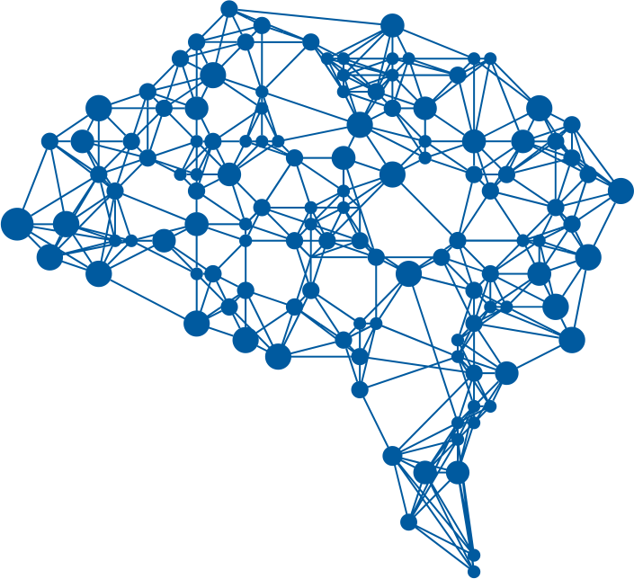
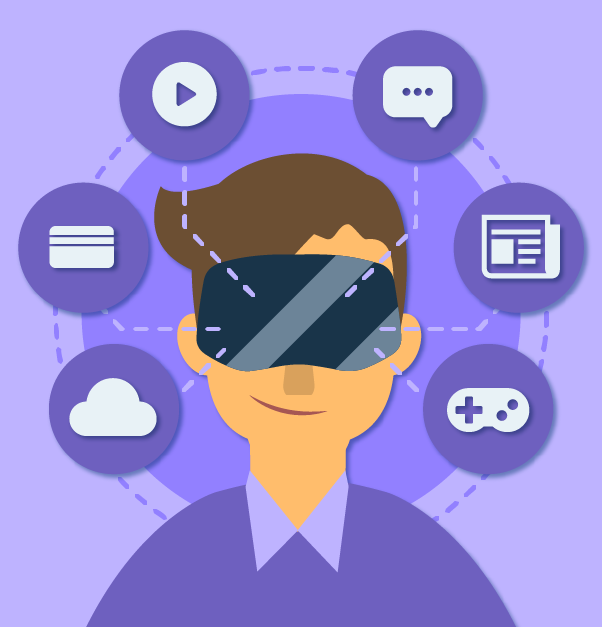

(HyperText Markup Language, versión 5) es la quinta revisión importante del lenguaje básico de la World Wide Web, HTML HTML5 especifica dos variantes de sintaxis para HTML: una «clásica», HTML (text/html), conocida como HTML5, y una variante XHTML conocida como sintaxis XHTML5 que deberá servirse con sintaxis XML (application/xhtml+xml). Esta es la primera vez que HTML y XHTML se han desarrollado en paralelo. La versión definitiva de la quinta revisión del estándar se publicó en octubre de 2014. Se trata de una nueva versión de HTML, con nuevos elementos, atributos y comportamientos. Contiene un conjunto más amplio de tecnologías que permite a los sitios Web y a las aplicaciones ser más diversas y de gran alcance. A este conjunto se le llama HTML5 y amigos, a menudo reducido a HTML5. Diseñado para ser utilizable por todos los desarrolladores de Open Web, esta página referencía numerosos recursos sobre las tecnologías de HTML5, clasificados en varios grupos según su función. La versión anterior y más usada de HTML, HTML4, carece de características necesarias para la creación de aplicaciones modernas basadas en un navegador. HTML4 y HTML5 son 100% compatibles entre sí. Todo el código que esta en HTML normal seguirá funcionando sin problemas en HTML5. Videos de como aprender HTML5: Introducción a HTML5 Historia Etructura basica de HTML5 Pruebas de HTML5
CSS significa Cascade Style Sheets, también llamado Hojas de Estilo en Cascada. CSS es un lenguaje de marcado que se emplea para dar formato a un sitio web. Es decir, funciona en conjunto con los archivos HTML. Por esta razón, para crear un sitio web debes saber tanto HTML como CSS. Cabe agregar que el lenguaje CSS3 se puede aplicar en la misma hoja en la que estás desarrollando un documento HTML, pero por motivos de productividad se suele realizar en un documento aparte con la extensión .css. Este documento se puede vincular a cada página HTML que conforme el sitio web, es por ello que es más útil realizar los estilos por separado. CSS3 sirve para cambiar el aspecto de un sitio web, desde las medidas para los márgenes hasta las especificaciones para las imágenes y el texto. CSS3 funciona mediante módulos, algunos de los más comunes son “colors”, “fonts”, “backgrounds”, etc. Los módulos son sólo categorías en las que se pueden dividir las modificaciones que hacemos al aspecto de nuestro sitio web. Una de las mayores características de CSS3 que permite maximizar la experiencia de usuario en los dispositivos móviles es el uso de Media Queries. Las Media Queries o consultas de medios en CSS te permiten añadir estilos o reglas específicas según el tamaño de pantalla, la dirección del dispositivo o la densidad de pixeles. Videos de como aprender CSS3: Introducción Sintaxis y formas de aplicar CSS Normalizar estilos Buenas practicas y Desarrollo ordenado
JavaScript (abreviado comúnmente JS) es un lenguaje de programación interpretado, dialecto del estándar ECMAScript. Se define como orientado a objetos, basado en prototipos, imperativo, débilmente tipado y dinámico. Se utiliza principalmente en su forma del lado del cliente (client-side), implementado como parte de un navegador web permitiendo mejoras en la interfaz de usuario y páginas web dinámicas aunque existe una forma de JavaScript del lado del servidor(Server-side JavaScript o SSJS). Su uso en aplicaciones externas a la web, por ejemplo en documentos PDF, aplicaciones de escritorio (mayoritariamente widgets) es también significativo. Desde el 2012, todos los navegadores modernos soportan completamente ECMAScript 5.1, una versión de javascript. Los navegadores más antiguos soportan por lo menos ECMAScript. La sexta edición se liberó en julio del 2015. JavaScript se diseñó con una sintaxis similar a C, aunque adopta nombres y convenciones del lenguaje de programación Java. Sin embargo, Java y JavaScript tienen semánticas y propósitos diferentes. Videos de como aprender Javascript: Introducción Utilización de variable Tipos de datos Arreglos
Las aplicaciones web progresivas usan API web modernas junto con la estrategia tradicional de mejora progresiva para crear aplicaciones web multiplataforma. Estas aplicaciones funcionan en todas partes y ofrecen varias características que les otorgan las mismas ventajas de experiencia para el usuario que las aplicaciones nativas. Este conjunto de documentos te dice todo lo que necesitas saber sobre ellos. Los PWA deben ser reconocibles, instalables, enlazables, independientes de la red, progresivos, reactivables, receptivos y seguros. Para obtener más información sobre lo que significan, lea las ventajas de la aplicación web progresiva. Para saber cómo implementar PWA, consulte las guías que figuran en la siguiente sección. Desde alrededor de 2005 tecnologías de desarrollo web han pasado de estática a dinámica documentos impulsados por servidor ( PHP , ASP.NET ) y el lado del cliente (por ejemplo, Ajax) herramientas y diseño web receptivo. A pesar de un impulso inicial para aplicaciones basadas en web basadas en estas tecnologías en dispositivos como el iPhone 2007, los intentos de aplicaciones web fallaron en comparación con las aplicaciones nativas. En 2015, el diseñador Frances Berriman y el ingeniero de Google Chrome Alex Russell acuñaron el término "aplicaciones web progresivas" para describir aplicaciones que aprovechan las nuevas características compatibles con navegadores modernos, incluidos los trabajadores de servicios y los manifiestos de aplicaciones web , que permiten a los usuarios actualizar aplicaciones web a aplicaciones web progresivas en su sistema operativo (SO) nativo. Videos de ejemplos: Flujo de trabajo en una PWA Progressive Web App Progressive Web App Builder Wego
La Inteligencia Artificial (IA) es la combinación de algoritmos planteados con el propósito de crear máquinas que presenten las mismas capacidades que el ser humano. Una tecnología que todavía nos resulta lejana y misteriosa, pero que desde hace unos años está presente en nuestro día a día a todas horas. La encontramos en la detección facial de los móviles, en los asistentes virtuales de voz como Siri de Apple, Alexa de Amazon o Cortana de Microsoft y está integrada en nuestros dispositivos cotidianos a través de bots (abreviatura de robots) o aplicaciones para móvil, tales como: Lyli, se abre en ventana nueva., un personal shopper en versión digital; Parla, se abre en ventana nueva., concebida para ayudarnos con el aprendizaje de idiomas; Ems, se abre en ventana nueva., diseñada para hacernos un poco más llevadera la ardua tarea de encontrar nuevo piso; o GyantEnlace externo, se abre en ventana nueva., un asistente virtual de Facebook que emite 'diagnósticos' médicos. El objetivo de todas ellas: hacer más fácil la vida de las personas. Los avances en IA ya están impulsando el uso del big data debido a su habilidad para procesar ingentes cantidades de datos y proporcionar ventajas comunicacionales, comerciales y empresariales que la han llevado a posicionarse como la tecnología esencial de las próximas décadas. Transporte, educación, sanidad, cultura... ningún sector se resistirá a sus encantos. Esta vertiginosa irrupción de la IA y de la robótica en nuestra sociedad ha llevado a los organismos internacionales a plantearse la necesidad de crear una normativa para regular su uso y empleo y evitar, de este modo, posibles problemáticas que puedan surgir en el futuro. Videos de ejemplos de inteligecia artificial: ¿Qué es Inteligencia Artificial? 4 Tipos De Inteligencia Artificial "Robots Inteligentes Clasificación Con Ejemplos De Las Inteligencias Artificiales Demostracion de inteligencia artificial
Es el subcampo de las ciencias de la computación y una rama de la inteligencia artificial, cuyo objetivo es desarrollar técnicas que permitan que las computadoras aprendan. De forma más concreta, se trata de crear programas capaces de generalizar comportamientos a partir de una información suministrada en forma de ejemplos. Es, por lo tanto, un proceso de inducción del conocimiento. En muchas ocasiones el campo de actuación del aprendizaje automático se solapa con el de la estadística computacional, ya que las dos disciplinas se basan en el análisis de datos. Sin embargo, el aprendizaje automático también se centra en el estudio de la complejidad computacional de los problemas. Videos de ejemplos: ¿Qué es Machine Learning? Usando Machine learning

Es parte de una familia más amplia de métodos de aprendizaje automático basados en representaciones de datos de aprendizaje , en oposición a los algoritmos específicos de tareas. El aprendizaje puede ser supervisado , semi-supervisado o no supervisado. Arquitecturas de aprendizaje profundo como redes neuronales profundas , redes de creencias profundas y redes neuronales recurrentes se han aplicado a campos como visión artificial , reconocimiento de voz , procesamiento de lenguaje natural , reconocimiento de audio, filtrado de redes sociales, traducción automática , bioinformática , diseño de fármacos y programas de juegos de mesa , donde han producido resultados comparables y en algunos casos superiores a los expertos humanos. Videos de ejemplos: Introducción Demostración de Deep Learning
Las Redes Neuronales son un campo muy importante dentro de la Inteligencia Artificial. Inspirándose en el comportamiento conocido del cerebro humano (principalmente el referido a las neuronas y sus conexiones), trata de crear modelos artificiales que solucionen problemas difíciles de resolver mediante técnicas algorítmicas convencionales. Respecto a su funcionamiento, el cerebro puede ser visto como un sistema inteligente que lleva a cabo tareas de manera distinta a como lo hacen las computadoras actuales. Si bien estas últimas son muy rápidas en el procesamiento de la información, existen tareas muy complejas, como el reconocimiento y clasificación de patrones, que demandan demasiado tiempo y esfuerzo aún en las computadoras más potentes de la actualidad, pero que el cerebro humano es más apto para resolverlas, muchas veces sin aparente esfuerzo (por ejemplo, el reconocimiento de un rostro familiar entre una multitud de otros rostros). Videos de ejemplos: Explicacion de Red neuronal Ejemplo Red Neuronal
Es un medio digital de intercambio. La primera criptomoneda que empezó a operar fue el bitcoin en 2009 y, desde entonces, han aparecido muchas otras con diferentes características y protocolos como Litecoin,Ethereum,Ripple,Dogecoin.
En los sistemas de criptomonedas, se garantiza la seguridad, integridad y equilibrio de sus estados de cuentas (contabilidad) por medio de un entramado de agentes (transferencia de archivo segmentada o transferencia de archivo multifuente) que se verifican (desconfían) mutuamente llamados mineros, que son, en su mayoría, público en general y protegen activamente la red (el entramado) al mantener una alta tasa de procesamiento de algoritmos, con la finalidad de tener la oportunidad de recibir una pequeña propina, que se reparte de manera aleatoria. Romper la seguridad existente en una criptomoneda es matemáticamente posible, pero el costo para lograrlo sería inasumiblemente alto. Por ejemplo, un atacante que intentase quebrar el sistema de prueba de trabajo de Bitcoin necesitaría una potencia computacional mayor que el de todo el entramado (red-enjambre) de todos los mineros del sistema, y aun así, solo tendría una probabilidad de éxito del 50% (n.º de ronda de autenticación), en otras palabras, romper la seguridad de Bitcoin exigiría una capacidad superior a la de empresas tecnológicas del tamaño de Google. Está previsto que en el futuro la computación cuántica pueda llegar a ser una realidad, lo que rompería el equilibrio en caso de que los desarrolladores no pudieran implementar a tiempo el sistema para usar algoritmos poscuánticos, por tratarse de una tecnología propietaria.
Es una lista creciente de registros, llamados bloques , que se vinculan mediante criptografía. Las criptomonedas utilizan ampliamente las cadenas cuadradas que son legibles por el público. Bloqueas privadas han sido propuestas para uso comercial. Algunos mercadeo de blockchains ha sido llamado "aceite de serpiente". Cada bloque contiene un hash criptográfico del bloque anterior, una marca de tiempo y datos de transacción (generalmente representados como un hash de raíz de árbol de merkle ). Por diseño, una cadena de bloques es resistente a la modificación de los datos. Es "un libro mayor abierto y distribuido que puede registrar transacciones entre dos partes de manera eficiente y de manera verificable y permanente". Para ser utilizado como un libro mayor distribuido , una cadena de bloques se gestiona típicamente por una red punto a punto que se adhiere colectivamente a un protocolopara la comunicación entre nodos y validación de nuevos bloques. Una vez registrados, los datos en cualquier bloque dado no pueden alterarse retroactivamente sin alteración de todos los bloques subsiguientes, lo que requiere consenso de la mayoría de la red. Aunque los registros de la cadena de bloques no son inalterables, las cadenas de bloques se pueden considerar seguras por diseño y ejemplifican un sistema de computación distribuida con una alta tolerancia a fallas bizantina. Por lo tanto, se ha reivindicado el consenso descentralizado con una cadena de bloques. Blockchain fue inventado por Satoshi Nakamoto en 2008 para servir como el libro de transacciones públicas de la criptomoneda bitcoin. La invención del blockchain para bitcoin lo convirtió en la primera moneda digital en resolver el problema del gasto doble sin la necesidad de una autoridad de confianza o un servidor central. El diseño de bitcoin ha inspirado otras aplicaciones. Videos de ejemplos: Blockchain en 5 minutos ¿Qué es BlockChain? Ejemplos de uso en el mundo Otros usos de 'blockchain'
Es la protección de los sistemas informáticos contra el robo o el daño a su hardware , software o datos electrónicos , así como a la interrupción o la desviación de los servicios que proporcionan. Cybersecurity incluye el control del acceso físico al hardware del sistema, así como la protección contra daños que pueden hacerse a través del acceso a la red, datos maliciosos e inyección de código. Además, debido a mala práctica por parte de los operadores, ya sea intencional o accidental, el personal de seguridad de TI es susceptible de ser engañado para desviarse de los procedimientos seguros a través de varios métodos de ingeniería social. El campo es cada vez más importante debido a la creciente dependencia de los sistemas informáticos, Internet y redes inalámbricas como Bluetooth y Wi-Fi, y debido al crecimiento dedispositivos "inteligentes", incluidos teléfonos inteligentes, televisores y varios dispositivos pequeños. Que constituyen el Internet de las cosas. Videos de ejemplos: Ciberseguridad para la empresa Movilidad y ciberseguridad Ciberseguridad en el hogar Máster en Seguridad de la Información

Es un entorno de escenas u objetos de apariencia real. La acepción más común refiere a un entorno generado mediante tecnología informática, que crea en el usuario la sensación de estar inmerso en él. Dicho entorno es contemplado por el usuario a través de un dispositivo conocido como gafas o casco de realidad virtual. Este puede ir acompañado de otros dispositivos, como guantes o trajes especiales, que permiten una mayor interacción con el entorno así como la percepción de diferentes estímulos que intensifican la sensación de realidad. El término realidad virtual (RV) se popularizó a finales de la década de 1980 por Jaron Lanier, uno de los pioneros del campo. Al mismo tiempo, también apareció el término Realidad Artificial (RA). 1 En 1982 el término ciberespacio fue acuñado en una novela por W. Gibson ("Burning Chrome"). La Enciclopedia Británica describe la realidad virtual como "el uso del modelado y la simulación por computadora que permite a una persona interactuar con un entorno sensorial tridimensional (3D) artificial u otro entorno sensorial". 2 Además, establece que "las aplicaciones de realidad virtual sumergen al usuario en un entorno generado por computadora que simula la realidad mediante el uso de dispositivos interactivos, que envían y reciben información y se usan como gafas, auriculares, guantes o trajes para el cuerpo". Por ejemplo, un usuario que usa una pantalla montada en la cabeza con un sistema de proyección estereoscópica puede ver imágenes animadas de un entorno virtual. Un término importante es presencia o telepresencia, que se puede describir como una ilusión de "estar allí". Videos de ejemplos: Marketing de Realidad Virtual Que es la Realidad Virtual y Realidad Aumentada Realidad virtual para empresas Realidad virtual en el quirófano
Es el término que se usa para definir la visión de un entorno físico del mundo real, a través de un dispositivo tecnológico. Este dispositivo o conjunto de dispositivos, añaden información virtual a la información física ya existente; es decir, una parte sintética virtual a la real. De esta manera; los elementos físicos tangibles se combinan con elementos virtuales, creando así una realidad aumentada en tiempo real. La realidad aumentada es diferente de la realidad virtual: sobre la realidad material del mundo físico monta una realidad visual generada por la tecnología, en la que el usuario percibe una mezcla de las dos realidades; en cambio, en la realidad virtual el usuario se aísla de la realidad material del mundo físico para sumergirse en un escenario o entorno totalmente virtual. Con la ayuda de la tecnología; por ejemplo, añadiendo la visión por un computador y reconocimiento de objetos, la información sobre el mundo real alrededor del usuario, se convierte en interactiva y digital. La información artificial sobre el medio ambiente y los objetos puede ser almacenada y recuperada como una capa de información en la parte superior de la visión del mundo real. La realidad aumentada de investigación explora la aplicación de imágenes generadas por ordenador en tiempo real a secuencias de vídeo como una forma de ampliar el mundo real. La investigación incluye a este respecto el uso de pantallas colocadas en la cabeza, un monitor virtual colocado en la retina para mejorar la visualización y la construcción de ambientes controlados a partir de sensores y actuadores. Videos de ejemplos: Realidad Aumentada en la publicidad ¿Cómo funciona? y Usos Realidad Aumentada para tu smartphone Ejemplo presentación estructura metálica con realidad aumentada
Es la combinación de realidad virtual y realidad aumentada. Esta combinación permite crear nuevos espacios en los que interactúan tanto objetos y/o personas reales como virtuales. Es decir, se puede considerar como una mezcla entre la realidad, realidad aumentada, virtualidad aumentada y realidad virtual. En la realidad mixta se trata de llevar el mundo real al mundo virtual. La idea es generar un modelo 3D de la realidad y sobre él superponer información virtual. De esta forma, se podrán combinar ambas realidades para agregar contenido adicional de valor para el usuario de MR. Conseguir esta traslación del mundo real a un modelo 3D virtual es uno de los principales retos de esta tecnología. Uno de los métodos para logra la fusión de ambos mundos y formar un espacio común es la que se utiliza en Project Tango de Google. Este método consiste en el escaneo del espacio en tiempo real para poder conseguir el mix del modelo 3D real con el virtual.
La variedad de aplicaciones y sectores en los que se puede usar la MR es muy diversa y prometedora. Algunos de los ejemplos que están mostrando los principales desarrolladores de esta tecnología son:
Es la red de dispositivos físicos, vehículos, electrodomésticos y otros elementos embebidos con la electrónica, software, sensores, actuadores, y la conectividad que permite a estas cosas de conectar e intercambiar datos , creando oportunidades para una integración más directa del mundo físico en sistemas basados en computadora, lo que resulta en mejoras de eficiencia, beneficios económicos y esfuerzos humanos reducidos. El número de dispositivos IoT aumentó un 31% año tras año a 8.400 millones en 2017 y se estima que habrá 30.000 millones de dispositivos para 2020. Se prevé que el valor de mercado mundial de IoT llegue a $ 7.1 billones para 2020. IoT implica extender la conectividad de Internet más allá de los dispositivos estándar, como computadoras de escritorio, computadoras portátiles, teléfonos inteligentes y tabletas, a cualquier rango de dispositivos físicos y objetos cotidianos tradicionalmente tontos o sin acceso a Internet. Integrados con la tecnología, estos dispositivos se pueden comunicar e interactuar a través de Internet, y se pueden monitorear y controlar remotamente. Videos de ejemplos: Ejemplo de hasta donde llegará el Internet de las cosas ¿En qué consiste y cómo funciona? Ejemplo de Intel El Internet de las Cosas
Un consenso común es describir a la mecatrónica como una disciplina integradora de las áreas de mecánica, electrónica e informática cuyo objetivo es proporcionar mejores productos, procesos y sistemas industriales. La mecatrónica no es, por tanto, una nueva rama de la ingeniería, sino un concepto recientemente desarrollado que enfatiza la necesidad de integración y de una interacción intensiva entre diferentes áreas de la ingeniería.
Con base en lo anterior, se puede hacer referencia a la definición propuesta por J. A. Rietdijk: "Mecatrónica es la combinación sinérgica de la ingeniería mecánica de precisión, de la electrónica, del control automático y de los sistemas para el diseño de productos y procesos", la cual busca crear maquinaria más compleja para facilitar las actividades del ser humano a través de procesos electrónicos en la industria mecánica principalmente. Existen, claro está, otras versiones de esta definición, pero ésta claramente enfatiza que la mecatrónica está dirigida a las aplicaciones y al diseño.
La mecatrónica nace para suplir tres urgentes necesidades latentes; la primera, encaminada a automatizar la maquinaría y así lograr procesos productivos ágiles y confiables; la segunda crear productos inteligentes, que respondan a las necesidades del mundo moderno; y la tercera, por cierto muy importante, armonizar entre los componentes mecánicos y electrónicos de las máquinas, ya que en muchas ocasiones, era casi imposible lograr que tanto mecánica como electrónica manejaran los mismos términos y procesos para hacer o reparar equipos.
Un ingeniero en mecatrónica es un profesional con amplio conocimiento teórico, práctico y multidisciplinario capaz de integrar y desarrollar sistemas automatizados y/o autónomos que involucren tecnologías de varios campos de la ingeniería. Este especialista entiende sobre el funcionamiento de los componentes mecánicos, eléctricos, electrónicos y computacionales de los procesos industriales, y tiene como referencia el desarrollo sostenible.
Es cualquiera de varios procesos en los que el material se une o solidifica bajo el control de la computadora para crear un objeto tridimensional, con material que se agrega (como moléculas líquidas o granos de polvo fusionados). La impresión 3D se utiliza tanto en prototipos rápidos como en fabricación aditiva (AM).
Los objetos pueden ser de casi cualquier forma o geometría y generalmente se producen utilizando datos de modelos digitales de un modelo 3D u otra fuente de datos electrónicos, como un archivo de Archivo de Fabricación Aditiva (AMF) (generalmente en capas secuenciales). Hay muchas tecnologías diferentes , como la estereolitografía(SLA) o modelado de depósitos fusionados (FDM).
Por lo tanto, a diferencia del material eliminado de un stock en el proceso de mecanizado convencional, la impresión 3D o AM crea un objeto tridimensional a partir de un modelo de diseño asistido por computadora (CAD) o archivo AMF, generalmente añadiendo sucesivamente material capa por capa.
El término "impresión 3D" originalmente se refería a un proceso que deposita un material aglutinante sobre un lecho de polvo con cabezales de impresora de inyección de tinta capa por capa. Más recientemente, el término se está utilizando en la lengua vernácula popular para abarcar una variedad más amplia de técnicas de fabricación aditiva. Los Estados Unidos y las normas técnicas mundiales utilizan el término oficial de fabricación aditiva en este sentido más amplio.
La red inalámbrica de la próxima (5ta) generación abordará la evolución más allá del internet móvil, y alcanzará al Internet de las Cosas masivo hacia 2020.
La evolución más notable en comparación con las redes 4G y 4.5G (LTE avanzado) actuales es que, aparte del aumento en la velocidad de los datos, los nuevos casos de uso del Internet de las Cosas y de la comunicación requerirán nuevos tipos de desempeño mejorado; como la “latencia baja”, que brinda una interacción en tiempo real a los servicios que utilizan la nube, lo que resulta clave, por ejemplo, para los vehículos autónomos.
Además, el bajo consumo de energía permitirá que los objetos conectados funcionen durante meses o años sin la necesidad de la intervención humana.
A diferencia de los servicios actuales del Internet de las Cosas que sacrifican rendimiento para sacar el máximo provecho a las tecnologías inalámbricas existentes (3G, 4G, WiFi, Bluetooth, Zigbee, etc.), las redes 5G estarán diseñadas para alcanzar el nivel de rendimiento que necesita el Internet de las Cosas masivo. Esto hará posible que se perciba un mundo completamente ubicuo y conectado.
Html, sigla en inglés de HyperText Markup Language (lenguaje de marcas de hipertexto), hace referencia al lenguaje de marcado para la elaboración de páginas web.
El css3, este es el encargado de darle estilo y dinamismo a nuestra pagina web.
Este es un lenguaje de programación, y Se define como orientado a objetos,3 basado en prototipos, imperativo, débilmente tipado y dinámico.
Esta son aplicaciones web o sitios web, que evolucionan, es decir se actulizan y se adaptan a la herramienta tecnologica
La inteligencia artificial, en resumen es cuando una maquina imita el comportamiento de un humano
El machine learning se encarga de hacer que las maquinas aprendan a tomar decisiones simples por ella misma, y que estas vayan aprendiendo a medidas que pasa el tiempo.
El deep leaning es parecido al machine learning, pero con la diferencia de que este se adentra mas en las tomas de decisiones de las maquina.
Tambien llamadas sistemas conexionista el principal de esta red es resolver los problemas de la misma manera que el cerebro humano, aunque las redes neuronales son más abstractas.
Se puede decir que la criptomonedas es un medio por el cual se intercambia algo, y la primera criptomoneda fue la bitcoin.
La blockchain o cadena de bloques es un sistema informático conformado por una red de computadoras (los nodos).
En resumen la cyberseguridad se encarga de proteger la infraestructura computacional y todo lo relacionado con esta.
La realidad virtual consiste en crear un entorno virtual que simule o replique un lugar existente o imaginario, permitiendo interactuar con los elementos allí ubicados. De ahí viene su nombre: es un entorno totalmente virtual. Consiste en simular un entorno tridimensional y adicionalmente, con la posibilidad de incorporar información sensorial: audio, movimiento de las manos… con el objetivo final de conseguir que el usuario sienta que está en un lugar dado y pueda interactuar con él.
La realidad aumentada consiste en la mezcla de contenido digital con contenido físico para construir una realidad mixta en tiempo real.
La realidad mixta es la combinacion de la realidad virtual con la realidad aumentada, la cual permite interactuar con los objetos y personas.
El internet de las cosas consiste en que todos los objetos cotidiano se conecten a la red, como por jemplos: reloj,vestimenta, entre otros.
La Mecatrónica surge de la combinación sinérgica de distintas ramas de la Ingeniería. Su principal propósito es el análisis y diseño de productos y de procesos de manufactura automatizados
La impresion 3d es la creacion de objetos tridimensional. la impresion 3d e utiliza tanto en prototipos rápidos como en fabricación aditiva (AM).
La tecnologia 5g es una evolucion de la 4g, eso quiere decir que la transferencia de informacion va hacer mucho mas rapido. Esta tecnologia esta prevista que pueda ser utilizada por todo el mundo en el 2025.
15-EISM-1-110 Luis Fernando Tejeda Suriel Seminario de Tecnologia